대상 버전 Agent v0.2.45 · Server v0.2.45 · 문서 버전 1.1 · 기준일 2026-09-10 · 문서 등급 공개
이 가이드는 Invenqor Agent를 한 대의 Linux 서버 또는 Windows PC·서버에 설치하고 정상 동작을 확인해야 하는 사용자와 현장 운영자를 위한 문서입니다. 중앙 게이트웨이 설계, 인증서 수명주기, 대량 배포와 상세 데이터 사전은 관리자 가이드를 참조하십시오.
이 문서를 마치면 다음 작업을 수행할 수 있습니다.
Invenqor Agent v0.2.45는 Server v0.2.45와 중앙 관리 콘솔을 함께 사용합니다. 서버 설치와 수집 데이터 처리 원칙은 Server 설치 및 운영 가이드를 참조하십시오.
이 문서의 화면 캡처는 모두 v0.2.45 Server를 실제로 띄워 촬영한 것입니다. 자산·
계정·호스트 이름은 전부 가공한 예시 값입니다. 다시 촬영하려면
node scripts/capture-guide-screenshots.mjs를 실행하십시오. 이 스크립트는 임시
디렉터리에 자체 Server를 띄워 촬영하고 끝나면 지우므로 운영 배포에 접근하지
않습니다.
에이전트가 이미 설치된 환경에서 관리자에게 계정을 받았다면, 다음 세 단계만으로 자산이 보이는 곳까지 도달합니다. 에이전트를 직접 설치해야 한다면 3장부터 읽으십시오.
1단계 — 로그인합니다. 브라우저로 관리자가 알려준 Server 주소(기본 포트
7070)를 열고 사용자 ID와 비밀번호를 입력한 뒤 안전하게 로그인을 누릅니다.
TOTP를 등록한 계정만 Authenticator 코드를 입력합니다. 조직이 Keycloak을
활성화한 경우에만 Keycloak으로 계속 버튼이 함께 나타납니다.
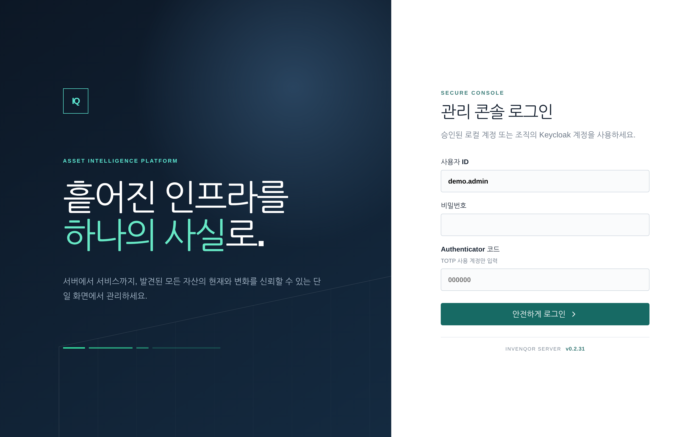
2단계 — 수집이 살아 있는지 확인합니다. 로그인하면 운영 현황이 열립니다.
정상 Agent가 6 / 6처럼 분모와 같고 24시간 수집의 실패가 0이면 수집은
정상입니다. 숫자가 어긋나면 오른쪽 운영 주의 항목이 무엇을 먼저 볼지
알려 줍니다.
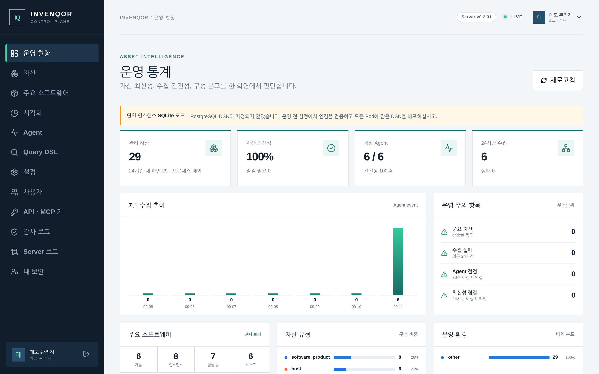
3단계 — 내 장비를 찾습니다. 왼쪽 자산을 누르고 검색란에 호스트 이름을 입력합니다. 행을 누르면 오른쪽에서 수집 원천, 변경 이력, 관계를 볼 수 있습니다. 여기까지 보이면 그 장비의 수집은 성공한 것입니다.
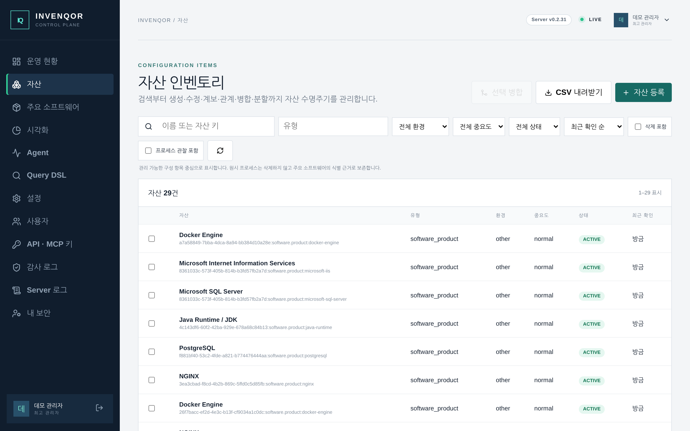
Invenqor Agent는 Linux의 /proc, /sys, /etc와 Windows 레지스트리·Win32·
Service Control Manager에서 운영체제 정보를 읽어 자산 스냅샷을 만듭니다. 수집은 외부에서 서버로 접속하는 방식이 아니라, 에이전트가
설정된 HTTPS 게이트웨이로 결과를 보내는 outbound-only 방식입니다.
기본 수집 범위는 다음과 같습니다.
| 영역 | 대표 수집 내용 |
|---|---|
| 시스템 | 호스트명, 배포판, 커널, 아키텍처, 부팅 시각, 시간대 |
| CPU·메모리 | 논리 CPU 수, CPU 모델, load average, /proc/meminfo 메모리 지표 |
| 파일시스템 | 장치, 마운트 지점, 파일시스템, 옵션, 용량과 inode 사용량 |
| 네트워크 | 인터페이스, MAC/IP, 상태, MTU, 기본 경로, DNS, 로컬 포트 |
| 프로세스 | PID, 이름, 상태, 부모 PID, UID/GID, 실행 파일 경로 |
| 소프트웨어 | dpkg, apk, rpm 또는 Windows Uninstall 레지스트리로 확인한 설치 제품 |
| 서비스 | systemd, OpenRC 또는 SysV 서비스와 활성화 관련 상태 |
| 계정 | 사용자명, UID/GID, 홈, 셸, 보조 그룹 |
| 컨테이너 | 런타임 소켓, 컨테이너 내부 실행 여부, cgroup 버전 |
프로세스 명령행은 비밀번호나 토큰을 포함할 수 있으므로 기본값에서는 수집하지 않습니다. 파일 내용, 사용자 비밀번호 해시, 프로세스 환경변수, 원격 명령 실행 결과도 수집하지 않습니다.
Server는 원시 프로세스·서비스·설치 패키지를 내장 카탈로그와 자동 대조해 PostgreSQL, Microsoft SQL Server, IIS, NGINX, Docker, 보안 Agent 같은 주요 제품으로 정규화합니다. 원시 프로세스는 판별 증거로 보존하되 기본 자산 화면에서는 숨기므로, 사용자가 수백 PID를 하나씩 분류하거나 매핑표를 관리할 필요가 없습니다.
x86_64/aarch64, Windows x86_64초기 폐쇄망 설치에서 http://사설IP:7070, localhost 또는 내부 DNS/Kubernetes
서비스명을 사용하면 별도 옵션 없이 URL만으로 연결할 수 있습니다. 신뢰 경계를
넘는 트래픽은 반드시 HTTPS를 사용하십시오.
오래된 커널과 배포판은 핵심 /proc 수집만 가능할 수 있습니다. 정적 바이너리는
외부 언어 런타임을 요구하지 않지만, 실제 사용하는 시스템 호출보다 오래된 커널의
실행을 보장하지는 않습니다.
uname -m
| 출력 | 받을 파일 |
|---|---|
x86_64 |
invenqor-agent-linux-x86_64.tar.gz |
aarch64 또는 arm64 |
invenqor-agent-linux-aarch64.tar.gz |
표에 없는 아키텍처에서는 제공된 바이너리를 실행하지 마십시오.
설치 전에 관리자에게 다음 정보를 받습니다.
https://inventory.example.internal)게이트웨이가 아직 없다면 URL 없이 설치할 수 있습니다. 수집 결과는 로컬 큐에 보존되지만 기본 100 MiB 한도에 도달하기 전에 게이트웨이를 설정하거나 운영 정책을 결정해야 합니다.
GitHub 릴리즈 페이지에서 아키텍처에 맞는 .tar.gz와 같은 이름의
.sha256 파일을 같은 디렉터리에 받습니다.
폐쇄망에 Linux와 Windows 배포본을 함께 반입하는 관리자는
invenqor-agents-0.2.45.tar.gz와 같은 이름의 .sha256을 사용할 수 있습니다.
묶음을 한 번 검증·해제한 뒤 대상 장비에는 아키텍처에 맞는 개별 패키지와 그
체크섬만 전달하십시오.
curl -LO https://github.com/hkjang/invenqor/releases/download/v0.2.45/invenqor-agent-linux-x86_64.tar.gz
curl -LO https://github.com/hkjang/invenqor/releases/download/v0.2.45/invenqor-agent-linux-x86_64.tar.gz.sha256
sha256sum -c invenqor-agent-linux-x86_64.tar.gz.sha256
정상이면 다음과 같이 표시됩니다.
invenqor-agent-linux-x86_64.tar.gz: OK
검증 실패 시 중단:
FAILED가 표시되면 압축을 풀거나 실행하지 마십시오. 파일을 삭제하고 신뢰할 수 있는 네트워크에서 다시 받으십시오.
x86_64 예시:
tar -xzf invenqor-agent-linux-x86_64.tar.gz
cd invenqor-agent-linux-x86_64
aarch64에서는 디렉터리 이름도 invenqor-agent-linux-aarch64입니다.
패키지는 다음 구성으로 되어 있습니다.
bin/invenqor-agent 실행 파일
config/config.toml 안전한 기본 설정
scripts/install.sh 설치 스크립트
scripts/uninstall.sh 제거 스크립트
service/invenqor-agent.service systemd 정의
service/invenqor-agent.openrc OpenRC 정의
service/invenqor-agent.init SysV init 정의
README.md 제품 설명
sudo ./scripts/install.sh
스크립트는 다음 작업을 수행합니다.
invenqor-agent 생성/opt/invenqor-agent/bin/invenqor-agent에 설치/etc/invenqor-agent/config.toml 생성/var/lib/invenqor-agent 생성기존 설정 파일은 덮어쓰지 않습니다. 재설치 후에도 설정과 미전송 큐는 유지됩니다.
systemd:
sudo systemctl status invenqor-agent --no-pager
sudo journalctl -u invenqor-agent -n 50 --no-pager
OpenRC:
sudo rc-service invenqor-agent status
SysV init:
sudo service invenqor-agent status
버전 확인:
/opt/invenqor-agent/bin/invenqor-agent --version
예상 출력은 invenqor-agent 0.2.45입니다.
Windows는 별도 배포본을 사용합니다. invenqor-agent-windows-x86_64.zip을 받아
체크섬을 확인하고, 압축을 푼 뒤 관리자 권한 PowerShell에서 설치합니다.
$release = 'https://github.com/hkjang/invenqor/releases/download/v0.2.45'
Invoke-WebRequest "$release/invenqor-agent-windows-x86_64.zip" -OutFile invenqor-agent-windows-x86_64.zip
Invoke-WebRequest "$release/invenqor-agent-windows-x86_64.zip.sha256" -OutFile invenqor-agent-windows-x86_64.zip.sha256
(Get-FileHash invenqor-agent-windows-x86_64.zip -Algorithm SHA256).Hash.ToLower()
Get-Content invenqor-agent-windows-x86_64.zip.sha256 # 두 값이 같아야 합니다
Expand-Archive invenqor-agent-windows-x86_64.zip -DestinationPath .
Set-Location invenqor-agent-windows-x86_64
.\scripts\install.ps1
설치되는 위치:
| 경로 | 내용 |
|---|---|
%ProgramFiles%\Invenqor\invenqor-agent.exe |
실행 파일 |
%ProgramData%\Invenqor\config.toml |
설정 파일 |
%ProgramData%\Invenqor\state\ |
식별자와 미전송 큐 |
%ProgramData%\Invenqor\service-name |
Installer가 관리하는 Windows 서비스명 |
Server 주소를 설정하고 재시작합니다. TOML의 작은따옴표 문자열은 이스케이프가 필요 없으므로 Windows 경로를 그대로 적을 수 있습니다.
notepad "$env:ProgramData\Invenqor\config.toml"
Restart-Service invenqor-agent
상태 확인:
Get-Service invenqor-agent
& "$env:ProgramFiles\Invenqor\invenqor-agent.exe" `
--config "$env:ProgramData\Invenqor\config.toml" --diagnose
Windows 서비스에는 표준 오류를 볼 콘솔이 없으므로 Agent가
%ProgramData%\Invenqor\state\agent.log에 로그를 기록합니다. 8 MiB에서
agent.log.1로 회전하며, 서비스 기동 자체가 실패하면 Windows 시스템 이벤트
로그의 Service Control Manager 항목도 확인합니다.
& "$env:ProgramFiles\Invenqor\invenqor-agent.exe" `
--config "$env:ProgramData\Invenqor\config.toml" --status
이후 절의 명령은 Linux 기준입니다. Windows에서는 실행 파일 경로와
--config 값만 위의 경로로 바꿔 같은 방식으로 사용하십시오. 서비스 제어는
Restart-Service / Stop-Service / Start-Service를 사용합니다.
기본 서비스명은 invenqor-agent입니다. 조직 표준에 따라 다른 이름을 써야 할 때만
install.ps1 -ServiceName 'Invenqor Agent Finance'로 설치하고 이후 업그레이드에도
같은 값을 사용하십시오. Agent는 보호된 service-name 파일에서 이를 자동 복구하므로
일반 --diagnose 명령에 이름을 반복할 필요가 없습니다. 파일을 직접 고치면 진단과
자동 업데이트 재시작이 실제 SCM 서비스와 달라질 수 있습니다.
설정 파일은 TOML 형식이며 알 수 없는 키가 있으면 실행을 거부합니다. 수정 전에 백업하고, 비밀값이 포함된 파일을 메신저나 이슈에 첨부하지 마십시오.
sudo cp -a /etc/invenqor-agent/config.toml \
/etc/invenqor-agent/config.toml.before-change
sudoedit /etc/invenqor-agent/config.toml
[server]
url = "https://inventory.example.internal"
timeout_seconds = 30
기본 Server에서는 URL만 설정하면 Agent가 최초 전송 전에 자동 등록하고 장비
전용 Token을 상태 디렉터리에 0600으로 저장합니다. 이후 설정 파일에 장비별
bearer_token을 복사할 필요가 없습니다.
url에는 scheme, host와 선택적 port만 입력합니다. /api, /v1/agent 같은 path,
query, fragment, user:password@ 형식의 인증정보를 붙이면 Agent가 기동 단계에서
거부합니다. 외부 Ingress가 https://inventory.example.internal을 받아 내부
Server 7070으로 전달한다면 외부 HTTPS origin만 입력하고 :7070을 덧붙이지
않습니다.
인터넷 또는 신뢰하지 않는 망에서 Server 7070에 접근할 수 있다면 관리자가
enrollment token 보호 모드를 사용할 수 있습니다. 이 경우에만 다음 항목을
추가하고 Token 파일을 root:invenqor-agent, 0640으로 설치합니다.
sudo install -m 0640 -o root -g invenqor-agent \
enrollment.token /etc/invenqor-agent/enrollment.token
enrollment_token_file = "/etc/invenqor-agent/enrollment.token"
수동 등록이 필요한 예외 장비만 bearer_token = "ivq_at_..."을 사용합니다.
[server]
url = "https://inventory.example.internal"
ca_file = "/etc/invenqor-agent/ca.pem"
client_identity_pem = "/etc/invenqor-agent/device.pem"
timeout_seconds = 30
device.pem은 클라이언트 인증서 체인과 개인키가 하나의 PEM에 있어야 합니다.
권한을 제한합니다.
sudo chown root:invenqor-agent \
/etc/invenqor-agent/ca.pem /etc/invenqor-agent/device.pem
sudo chmod 0640 /etc/invenqor-agent/ca.pem
sudo chmod 0640 /etc/invenqor-agent/device.pem
sudo -u invenqor-agent \
/opt/invenqor-agent/bin/invenqor-agent \
--config /etc/invenqor-agent/config.toml \
--validate-config
configuration is valid가 출력되면 서비스를 재시작합니다.
sudo systemctl restart invenqor-agent
sudo systemctl status invenqor-agent --no-pager
OpenRC는 sudo rc-service invenqor-agent restart, SysV는
sudo service invenqor-agent restart를 사용합니다.
Agent가 콘솔에 나타나지 않을 때 가장 먼저 실행합니다. 상태를 바꾸지 않으므로 운영 중에도 안전하며, 문제가 있으면 0이 아닌 코드로 종료합니다.
sudo -u invenqor-agent \
/opt/invenqor-agent/bin/invenqor-agent \
--config /etc/invenqor-agent/config.toml --diagnose
invenqor-agent 0.2.45 registration diagnosis at 2026-08-24T09:12:44Z
host app-web-01
agent-id d8d847a5-7a75-48bc-8ee8-c8e1af94f74c
config /etc/invenqor-agent/config.toml
server.url https://inventory.example:7070
[PASS] configuration file read /etc/invenqor-agent/config.toml
[PASS] state directory /var/lib/invenqor-agent is writable, agent-id d8d847a5…
[PASS] durable queue 0 undelivered event(s), 0 of 104857600 bytes used
[PASS] stored credential a device credential exists for this Server URL
[PASS] server.url https://inventory.example:7070 (scheme https, host inventory.example, port 7070)
[PASS] transport encryption HTTPS is configured
[PASS] name resolution inventory.example resolves to 10.10.4.20:7070
[PASS] server reachability GET /health/ready answered READY
[PASS] server identity Invenqor Server 0.2.45 (pod invenqor-0, database POSTGRES)
[PASS] observed source address the Server sees this host as 10.20.7.31
[PASS] registration policy mode open, network any: this host may register
[PASS] device credential accepted by the Server as agent d8d847a5… (auto_bearer)
result: OK - the Agent can reach the Server and register
실패한 항목에는 원인 코드와 조치가 함께 출력됩니다. 예를 들어 Server의 등록 허용 목록에 이 호스트가 없으면 다음과 같이 표시됩니다.
[FAIL] registration policy mode open, network allowlist: The Agent source IP is not permitted…
code: AGENT_SOURCE_NOT_ALLOWED
fix: Add the observed source address, or its CIDR, to the registration allowlist…
--json을 덧붙이면 같은 결과를 기계 판독용 JSON으로 출력합니다. 점검 항목은
설정 → 상태 디렉터리 → URL → DNS → 도달성 → Server 정책 → 자격 증명 순서이므로,
처음 실패한 항목이 곧 원인입니다.
Agent 바이너리 없이 확인해야 하면 아무 장비에서 사전 점검 API를 호출합니다. Server가 인식한 출처 IP와 등록 가능 여부를 그대로 돌려줍니다.
curl -s https://inventory.example:7070/v1/agent/preflight | jq .enrollment
systemd:
sudo journalctl -u invenqor-agent --since "10 minutes ago" --no-pager
기동 직후 agent transport configured 한 줄에 적용된 Server URL, 인증 방식,
등록 상태가 함께 기록됩니다. 정상 수집 시 queued collection event, 정상 전송 시
delivered queued events 메시지를 확인할 수 있습니다.
server.url이 설정되지 않은 경우에는 기동 시 다음 경고가 남고, 수집 결과는
로컬 큐에만 쌓입니다. 등록이 진행되지 않는 가장 흔한 원인입니다.
WARN server.url is not configured: inventory is collected into the local queue only,
no registration is attempted, and nothing is sent to a Server
등록이나 전송이 실패하면 한 줄에 원인 코드, Server의 request_id, 조치가 함께
기록되므로 콘솔의 Server 진단 로그에서 같은 request_id로 서버 측 기록을
바로 찾을 수 있습니다.
WARN Server exchange failed stage="automatic enrollment" code=AGENT_SOURCE_NOT_ALLOWED
http_status=Some(403) path=/v1/agent/enroll request_id=invenqor-0/abc-000123
remediation=The Server registration allowlist rejects this host's source IP…
실시간 로그:
sudo journalctl -u invenqor-agent -f
sudo ls -la /var/lib/invenqor-agent
sudo find /var/lib/invenqor-agent/queue -maxdepth 1 \
-type f -name '*.jsonl' -printf '%f %s bytes\n'
sudo du -sh /var/lib/invenqor-agent/queue
| 파일·디렉터리 | 의미 |
|---|---|
agent-id |
설치 단위를 식별하는 UUID, 권한 0600 |
inventory.json |
직전 유효 인벤토리 |
snapshot.sha256 |
변경 감지용 안정 해시 |
last-heartbeat |
마지막 이벤트/하트비트 시각 |
status.json |
등록·전송·큐 상태와 마지막 실패 원인, 권한 0600 |
enrollment-claim.json |
이 장비의 등록 청구 값, 권한 0600 |
device-credential.json |
자동 발급된 장비 전용 Token, 권한 0600 |
queue/*.jsonl |
아직 서버가 수락하지 않은 이벤트 |
status.json은 매 주기마다 갱신되며, 저널을 열람할 수 없는 환경에서도 등록
실패 원인을 남기는 것이 목적입니다. 사람이 읽는 요약은 --status로 확인합니다.
sudo -u invenqor-agent \
/opt/invenqor-agent/bin/invenqor-agent \
--config /etc/invenqor-agent/config.toml --status
invenqor-agent 0.2.45 on app-web-01
updated 2026-08-24T09:14:02Z
server.url https://inventory.example:7070
registration failed (the Server rejected or could not be reached for registration)
queue 3 event(s), 41231 of 104857600 bytes
delivered 0 event(s), last success never
last error AGENT_SOURCE_NOT_ALLOWED during automatic enrollment at 2026-08-24T09:14:02Z
The Agent source IP is not permitted by the enrollment policy.
server request_id invenqor-0/abc-000123
fix: The Server registration allowlist rejects this host's source IP…
summary registration is failing (AGENT_SOURCE_NOT_ALLOWED): …
정상 상태에서는 종료 코드 0, 등록이나 전송이 밀려 있으면 1을 반환하므로 감시
스크립트에서 그대로 사용할 수 있습니다. --json으로 원본 구조를 얻습니다.
큐 파일은 서버가 2xx 응답과 accepted: true를 모두 반환한 후에만 삭제됩니다.
전송 장애 중 큐 파일이 증가하는 것은 데이터 보존 동작입니다.
--once는 수집 결과 JSON을 화면에 출력하고 전송도 한 번 시도합니다. 운영
서비스와 같은 상태 디렉터리를 동시에 사용하면 안 되므로 먼저 서비스를 멈춥니다.
sudo systemctl stop invenqor-agent
sudo -u invenqor-agent \
/opt/invenqor-agent/bin/invenqor-agent \
--config /etc/invenqor-agent/config.toml \
--once
sudo systemctl start invenqor-agent
출력 취급: 한 번 수집 결과에는 계정명, 설치 소프트웨어, 네트워크 주소, 프로세스 정보가 들어 있습니다. 티켓이나 채팅에 원문을 붙이지 말고 조직의 자산정보 등급에 따라 보관하십시오.
설정 변경은 관리자 승인 아래 수행하십시오. 지나치게 짧은 주기는 서버와 게이트웨이 부하를 높이고, 지나치게 긴 주기는 자산 변경 탐지 시간을 늦춥니다.
| 작업 | systemd 명령 |
|---|---|
| 상태 | sudo systemctl status invenqor-agent |
| 시작 | sudo systemctl start invenqor-agent |
| 중지 | sudo systemctl stop invenqor-agent |
| 재시작 | sudo systemctl restart invenqor-agent |
| 부팅 시 자동 시작 확인 | sudo systemctl is-enabled invenqor-agent |
| 최근 로그 | sudo journalctl -u invenqor-agent -n 100 |
기본값 include_process_cmdline = false를 유지하는 것을 권장합니다. 반드시
필요하다면 보안·개인정보 책임자의 승인, 중앙 저장소 접근 통제, 보존 기간을 먼저
확정한 뒤 활성화하십시오.
[collectors]
include_process_cmdline = true
명령행에는 데이터베이스 비밀번호, API 토큰, 개인 경로가 포함될 수 있습니다.
가장 흔한 순서대로 확인합니다. 1번만으로 대부분 판정됩니다.
--diagnose를 실행합니다(6.0). 처음 [FAIL]이 표시된 항목이 원인이며 조치가
함께 출력됩니다.--status로 마지막 실패 코드와 Server request_id를 확인합니다(6.2).server.url이 설정돼 있는지 확인합니다. 주석 처리된 상태로 서비스가 기동하면
수집만 하고 등록은 시도하지 않습니다.grep -n '^\s*url' /etc/invenqor-agent/config.toml
주요 원인 코드와 조치:
| 코드 | 원인 | 조치 |
|---|---|---|
SERVER_UNREACHABLE |
TCP 연결 실패 | URL·라우팅·방화벽(7070/TCP outbound) 확인 |
SERVER_TIMEOUT |
응답 지연 | timeout_seconds 상향, 중간 프록시 점검 |
TLS_REJECTED |
서버 인증서 검증 실패 | ca_file에 사설 CA 인증서 지정 |
SERVER_RESPONSE_NOT_JSON |
콘솔·프록시가 대신 응답 | server.url을 scheme·host·port만으로 설정 |
AGENT_ENDPOINT_NOT_FOUND |
URL에 경로가 포함됨 | 같은 조치 |
AGENT_AUTO_ENROLLMENT_DISABLED |
Server가 자동 등록 비활성 | 콘솔에서 자동 등록 활성화 |
AGENT_SOURCE_NOT_ALLOWED |
출처 IP가 허용 목록 밖 | 허용 목록에 IP/CIDR 추가 |
AGENT_ENROLLMENT_UNAUTHORIZED |
공용 등록 Token 불일치 | 발급 Token을 enrollment_token_file에 기록 |
AGENT_ALREADY_CLAIMED |
이미지 복제로 agent-id 중복 | 복제본의 agent-id, enrollment-claim.json 삭제 |
AGENT_BLOCKED |
관리자가 차단 | 콘솔에서 차단 해제 |
먼저 Agent 화면의 last_inventory_at을 확인하십시오. 비어 있으면 운영체제
판별 문제가 아니라 아직 첫 inventory가 도착하지 않은 것이므로 --diagnose,
--status와 agent.log의 전송 오류부터 해결합니다.
첫 inventory 시각은 있는데 운영체제만 비어 있다면 먼저 Server가 v0.2.14 이상인지
확인하십시오. 이전 버전 Server는 Windows가 전송한 최상위 os_name을 읽지
못했습니다. v0.2.14 이상 Server는 기존 Agent 형식과 새 os_release 호환 형식을 모두
이해하고, 이미 저장된 기존 system 원천도 다음 heartbeat에서 다시 투영합니다.
따라서 Agent를 먼저 올리지 않아도 자동 복구되며, Agent v0.2.45로 순차 업데이트하면
구 Server와의 양방향 wire 호환도 확보됩니다. %ProgramData%\Invenqor\state를
삭제하거나 Agent를 재등록하지 마십시오.
& "$env:ProgramFiles\Invenqor\invenqor-agent.exe" --version
& "$env:ProgramFiles\Invenqor\invenqor-agent.exe" `
--config "$env:ProgramData\Invenqor\config.toml" --status
Get-Content "$env:ProgramData\Invenqor\state\agent.log" -Tail 80
다음 수집 주기를 기다리기 어렵다면 서비스를 중단한 뒤 --once를 한 번 실행하고
다시 시작할 수 있습니다. 운영 서비스와 --once가 같은 상태 디렉터리를 동시에
사용해서는 안 됩니다.
sudo systemctl status invenqor-agent --no-pager
sudo journalctl -u invenqor-agent -n 100 --no-pager
sudo -u invenqor-agent \
/opt/invenqor-agent/bin/invenqor-agent \
--config /etc/invenqor-agent/config.toml \
--validate-config
주요 원인:
interval_seconds, heartbeat_seconds, timeout_seconds,
max_processes가 0http:// URL 사용확인 순서:
https://로 시작하고 DNS가 올바른지 확인합니다.ca_file 경로와 PEM 내용을 확인합니다.client_identity_pem에 있는지,
만료되지 않았는지 확인합니다.{"accepted":true} JSON을 반환하는지 관리자에게 확인합니다.Server가 요청을 거부하면 Agent 로그에는 다음처럼 HTTP 상태 외에 안전한 오류 코드, API 경로와 request ID가 함께 표시됩니다.
WARN Server exchange failed stage="automatic enrollment" code=AGENT_SOURCE_NOT_ALLOWED
http_status=Some(403) path=/v1/agent/enroll request_id=invenqor-0/abc-000123
server_message=The Agent source IP is not permitted by the enrollment policy.
remediation=The Server registration allowlist rejects this host's source IP…
같은 내용이 status.json에도 남으므로 로그 유실 시에도 조회할 수 있습니다.
request_id 전체를 관리자에게 전달하십시오. 관리자는 Server 로그 화면에서
같은 ID를 검색해 요청을 처리한 Pod, 판정 IP, 정책 버전과 실패 단계를 확인할 수
있습니다. Agent 로그나 문의 내용에 등록 Token, 장비 Token, Secret, 원문
인벤토리를 붙이지 마십시오.
에이전트는 한 수집기가 실패해도 나머지 수집을 계속합니다. 권한, 오래된
배포판의 명령 차이, /proc 또는 /sys 마운트 제한을 확인하십시오. 수집기
오류가 있는 주기에는 누락된 자산을 삭제로 판단하지 않아 잘못된 대량 삭제를
방지합니다.
sudo du -sh /var/lib/invenqor-agent/queue
sudo find /var/lib/invenqor-agent/queue -type f -name '*.jsonl' | wc -l
게이트웨이 연결, TLS, 인증, 응답 형식을 확인합니다. 큐 파일을 수동 삭제하면 미전송 인벤토리를 잃습니다. 복구 전 삭제하지 말고 관리자에게 전달하십시오. 큐가 한도에 도달하면 기존 이벤트를 보존하고 새 이벤트 생성을 실패시킵니다.
압축을 풀어 둔 원본 패키지 디렉터리에서 실행합니다.
sudo ./scripts/uninstall.sh
제거 스크립트는 서비스와 바이너리를 제거하지만 다음 데이터는 의도적으로 보존합니다.
/etc/invenqor-agent: 설정, 인증서 참조 파일/var/lib/invenqor-agent: 장비 ID, 직전 인벤토리, 미전송 큐보존 데이터까지 삭제하려면 먼저 감사·복구·보존 정책과 미전송 여부를 확인한 후 관리자가 별도로 처리해야 합니다.
아닙니다. 에이전트는 설정된 게이트웨이로 HTTPS outbound 연결만 시작합니다.
가능합니다. server.url을 생략하면 로컬 수집과 큐 보존만 수행합니다. 장기간
운영하면 큐 용량 정책이 필요합니다.
대부분의 수집기는 서로 격리되어 있어 한 수집기의 오류가 나머지를 중단시키지 않습니다. 다만 상태 저장 실패나 잘못된 설정처럼 핵심 기능 오류는 실행에 영향을 줄 수 있습니다.
아닙니다. 패키지 인벤토리는 수집하지만 CVE 매핑, 위험도 계산, 정책 판정은 중앙 시스템의 역할입니다.
서명된 Agent 자동 업데이트는 선택적으로 지원합니다. 관리자가 승인·서명한
새 버전만 다운로드하고 SHA-256, 크기, version/channel/OS/Architecture와 rollback
의도를 함께 보호하는 Ed25519 manifest v2 서명을 고정 공개키로 검증한 뒤
스테이징합니다. 설치 직전에 새 바이너리를 제한된 시간·출력 범위에서 실행해
버전을 확인하므로 실행되지 않는 빌드는 설치되지 않고 기존 바이너리가 유지됩니다.
교체는 원자적이며
이전 바이너리를 .previous로 보존합니다. systemd는 즉시, OpenRC와 SysV는 서비스
시작 시 적용합니다. Windows service는 LocalSystem 권한으로 검증된 파일을 자동
교체하고 SCM recovery 동작으로 새 버전을 재시작합니다. Content-Length가 없는
Ingress 응답도 manifest 크기를 넘지 않는 범위에서 안전하게 받을 수 있습니다.
한 대를 지금 갱신하려면 --update-now를 실행하고, 현재 실행
버전과 대기 중인 버전은 --status로 확인합니다. 설정 방법은
Server 설치 및 운영 가이드를
참조하십시오. 원격 셸이나 임의 명령 실행은 지원하지 않습니다.
로그인 화면 하단에는 현재 Server 버전이 표시됩니다. 로그인 후에는 상단 버전 chip에서 같은 버전과 build 정보를 확인할 수 있어 장애 문의 시 실행 버전을 정확히 전달할 수 있습니다.
조직 관리자가 Keycloak을 활성화한 경우에만 Keycloak으로 계속 버튼이 나타납니다. 버튼을 누르면 조직 로그인 화면으로 이동하며, 인증 후 원래 Invenqor 서비스로 돌아옵니다. Keycloak 계정의 이름, Email과 SSO 역할은 로그인 때마다 조직 정책에 맞게 동기화됩니다.
운영 현황은 Server가 PostgreSQL에서 실시간 집계한 값만 사용합니다. 관리 자산 수, 최근 24시간 내 확인된 자산, 30분 내 연결된 Agent, 최근 24시간 수집 이벤트와 실패 건수를 KPI로 표시합니다. 7일 수집 추이, 중요도·환경·유형·수집 원천 분포와 점검 필요 자산/Agent를 함께 보고 수집 공백을 우선 처리하십시오. 관리 자산 KPI와 기본 자산 목록은 원시 process 관찰을 제외해 PID 수가 자산 수를 부풀리지 않으며, 주요 소프트웨어 요약을 함께 표시합니다.
주요 화면과 실제 동작은 다음과 같습니다.
| 화면 | 사용할 수 있는 기능 |
|---|---|
| 자산 | 관리 가능한 구성 항목 중심 목록, 이름·유형·환경·중요도·상태 필터와 정렬, 프로세스 관찰 포함 전환, CSV 내려받기, 등록·수정·삭제·복원, 상세·원천·이력·관계 조회 |
| 자산 고급 작업 | 선택 자산 병합, 선택 수집 원천을 새 자산으로 분리, 관계 생성·삭제 |
| 주요 소프트웨어 | 서비스·프로세스·설치 패키지를 자동 결합한 제품·호스트·버전·설치/실행 상태, 역할·상태·확신도 필터와 판별 근거 상세 |
| Agent | 상태·최근 수집 시각 확인, 예외 장비 수동 등록, Token 회전, 차단·해제, mTLS 인증서 등록 |
| 설정 → Agent 등록 | 신규 Agent의 URL-only/Token 모드, IP/CIDR allowlist와 신뢰 프록시를 즉시 전환 |
| Query DSL | Server가 제공하는 필드·연산자 목록, 자주 쓰는 질의 불러오기, 구문과 AST 검증, 제한 건수 내 결과 조회 |
| API · MCP 키 | 최소권한 scope 선택, 이름 변경, scope 추가·삭제, 무중단 회전과 폐기, 만료 임박 경고와 미사용 키 표시 |
| 감사 로그 | 전체 기록 대상 검색과 행위·자원·결과·기간 조건, 총 건수와 페이징, CSV 내려받기, 같은 request ID의 Server 로그로 이동 |
| Server 로그 | 모든 Pod의 Agent 등록·전송 실패와 Server 오류를 request ID로 검색, 구성요소·Pod 목록은 기록된 값에서 생성 |
| 내 보안 | 현재 다중요소 인증 상태 확인, QR 스캔 등록, 복구 코드 저장·재발급, 로컬 비밀번호 변경 |
| 우측 상단 프로필 | 내 보안, 개인화, 로그아웃으로 이동 |
| 개인화 | 화면 테마, 정보 밀도, 로그인 시작 화면, 운영 통계 새로고침 주기, 화면 움직임 최소화 |
각 화면의 실제 모습과 자주 쓰는 순서는 12.2부터 화면별로 정리했습니다.
화면의 생성·수정·삭제 버튼은 해당 권한이 있을 때만 나타납니다. 작업 실패 시
표시되는 서버 오류를 확인하고, 권한 오류는 관리자에게 역할을 요청하십시오.
페이지를 새로 열거나 Keycloak에서 돌아온 경우에도 브라우저는 현재 Session에
연결된 CSRF 보호 값을 자동 사용하므로 사용자가 Token을 복사할 필요가 없습니다.
개인화 설정은 사용자 ID별로 현재 브라우저에 저장되며 다른 사용자나 Server
운영 설정에는 영향을 주지 않습니다. 현재 주 메뉴와 설정의 하위 메뉴는
#/settings/keycloak 같은 URL과 사용자별 브라우저 상태에 함께 저장되어
새로고침·뒤로가기·다시 로그인 후에도 유지됩니다. 권한이 회수된 메뉴나 잘못된
URL은 접근 가능한 첫 화면으로 안전하게 복구됩니다.
한 행은 전사 공통 제품 하나가 아니라 제품이 한 호스트에 설치되거나 실행된 인스턴스 하나입니다. 같은 PostgreSQL 제품이 10개 호스트에서 확인되면 제품 수는 1, 인스턴스와 관리 호스트는 각각 10으로 집계됩니다. 행을 누르면 다음 근거를 확인할 수 있습니다.
설치 확인: 설치 패키지 또는 서비스 등록이 확인됨실행 관찰: 프로세스만 확인돼 설치 방식은 특정할 수 없음실행 중: 실행 프로세스 또는 활성 서비스가 확인됨중지: 서비스가 존재하고 중지 상태임미확인: 설치는 확인됐지만 현재 실행 여부를 판정할 증거가 없음신뢰도 80% 이상은 높음, 미만은 검토 권장입니다. 이는 보안 위험도가 아니라 제품 식별 근거의 강도입니다. 상세 화면의 서비스·프로세스·패키지와 원천 ID를 확인해 판단하십시오. v0.2.45 내장 카탈로그는 인프라와 보안 제품에 더해 Office/Microsoft 365, Chrome·Edge·Firefox, Teams·Zoom, Java·.NET, MECM·Tanium·BigFix, Elastic Agent·Wazuh 등 51개 주요 제품을 식별합니다. 카탈로그에 없는 일반 프로세스는 제품으로 추측하지 않으므로, 목록에 없다는 사실만으로 해당 프로그램이 설치되지 않았다고 단정해서는 안 됩니다. Chrome·Java처럼 범용 process 단독 신호는 오탐 방지를 위해 제품으로 승격하지 않으므로 패키지·서비스·고유 경로 근거를 함께 확인하십시오.
원시 PID가 필요한 장애·보안 조사는 자산 → 프로세스 관찰 포함을 켜거나 유형을
process로 검색합니다. 이 전환은 데이터를 새로 수집하거나 삭제하지 않고 화면
범위만 변경합니다.
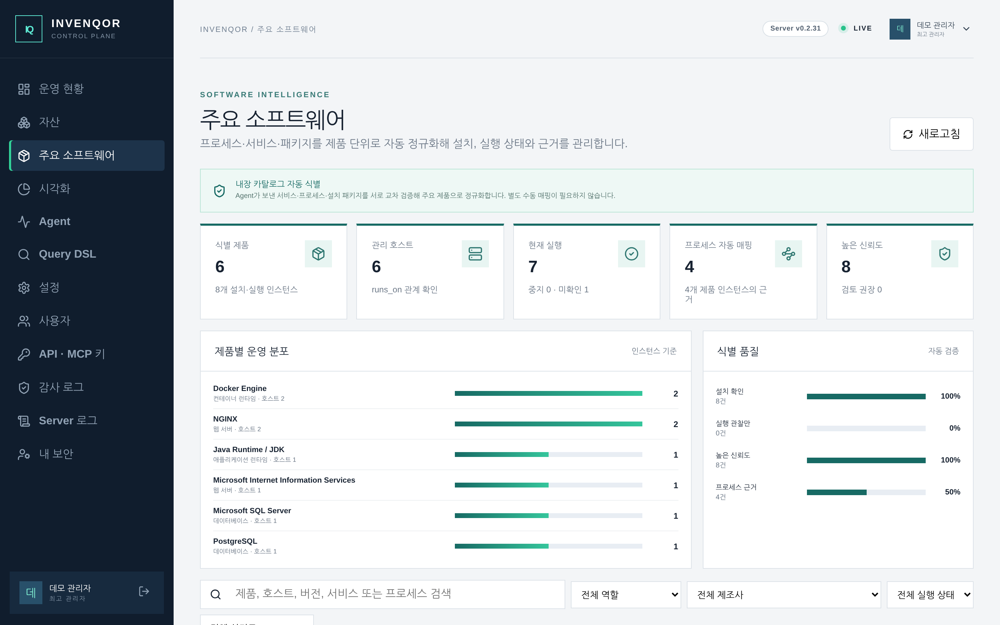
목록에서 행을 누르면 오른쪽에 상세가 열립니다. 위쪽 표는 자산 키·유형·상태·
중요도·환경·원천과 최초/최근 확인 시각이고, 그 아래로 수집 원천, 자산
관계가 이어집니다. 수집 원천의 payload를 펼치면 Agent가 실제로 보낸 값을
그대로 확인할 수 있어, 화면 값이 이상할 때 무엇이 들어왔는지 바로 대조할 수
있습니다.
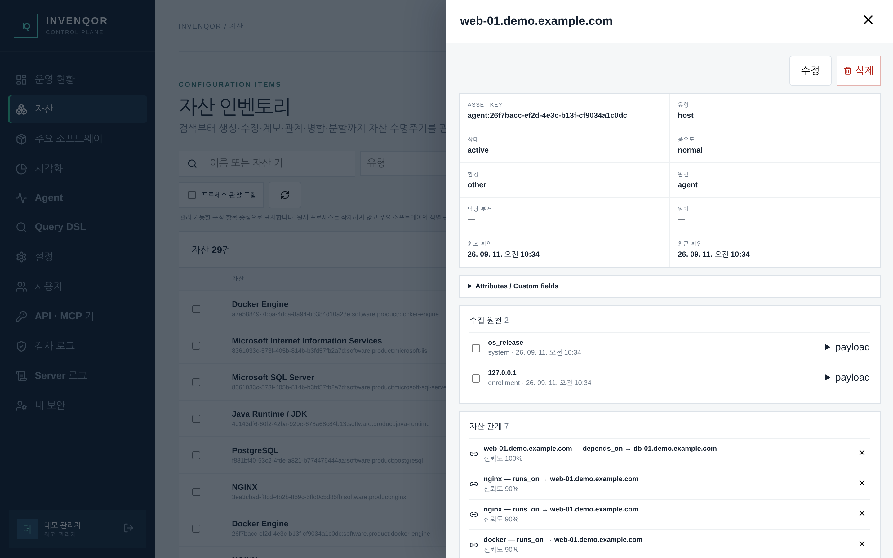
자주 쓰는 순서는 다음과 같습니다.
runs_on), 무엇에
의존하는지(depends_on) 확인합니다.시각화는 같은 필터 한 벌을 모든 탭이 공유합니다. 기간(7·30·90·180일),
환경, 중요도, 유형을 고르면 상단 KPI와 아래 구성 · 위험 매트릭스 · 신선도 ·
증감 · 성장 추이 · 관계 탭이 모두 같은 모집단을 사용하므로 화면 사이에서
숫자가 어긋나지 않습니다. 담당 미지정이 크면 담당 부서를 채워야 할 자산이
그만큼 남아 있다는 뜻입니다.
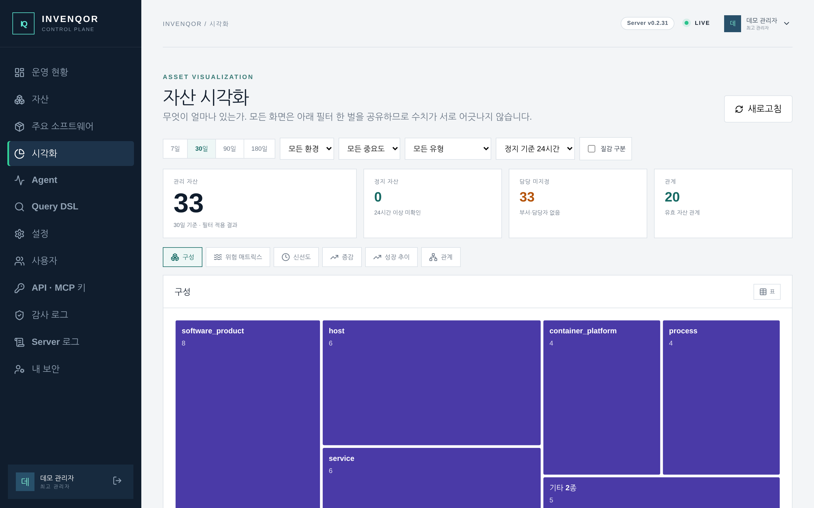
Agent 화면은 위쪽 등록 진단과 아래쪽 장비 카드 목록으로 나뉩니다. 등록 진단은 최근 24시간의 등록 성공·거부·사전 점검 차단·전송 실패·첫 수집 대기를 출처 IP와 오류 코드로 보여 줍니다. 콘솔에 아예 나타나지 않는 장비는 목록이 아니라 이 패널에서 찾습니다(8.0 참조).
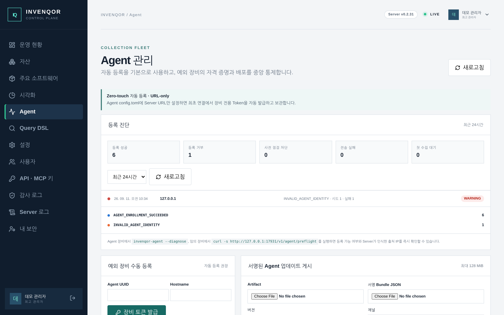
아래로 내리면 등록된 장비가 카드로 표시됩니다. 각 카드는 상태, 버전, 운영체제, 인증 방식과 최근 연결 시각을 보여 주며, 권한이 있으면 토큰 회전·mTLS 등록·차단을 같은 자리에서 수행할 수 있습니다.
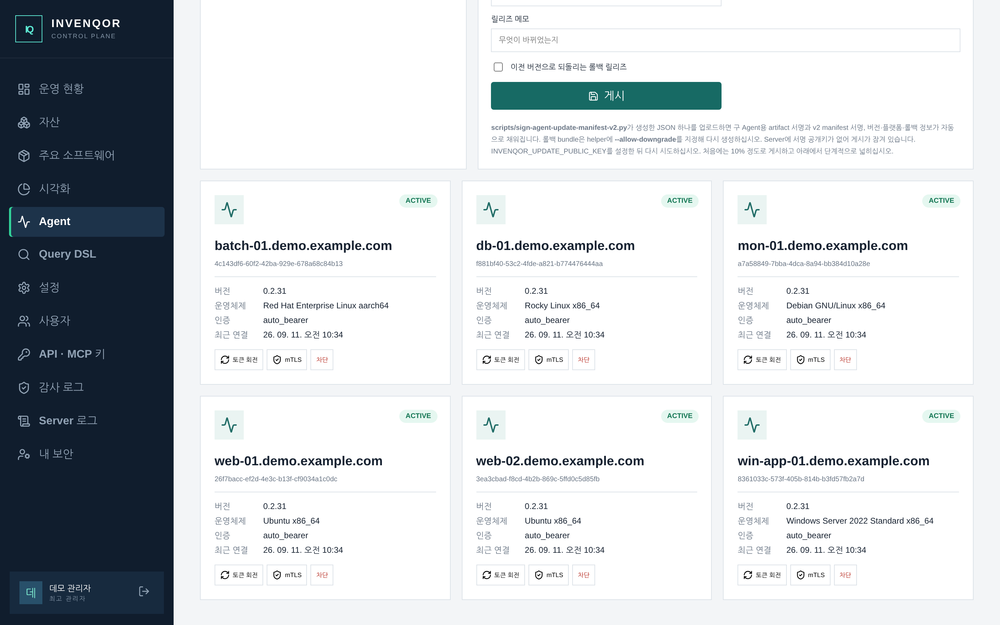
Query DSL은 검증과 실행을 분리합니다. 편집기에 조건을 쓰고 구문 검증을 누르면 서버가 파싱만 하고, 질의 실행을 눌러야 결과를 읽습니다. 오른쪽 사용 가능한 필드는 Server가 실제로 제공하는 필드 목록이므로, 문서를 찾지 말고 이 목록에서 골라 편집기에 넣으십시오. 자주 쓰는 질의를 누르면 예시가 편집기에 그대로 들어갑니다.
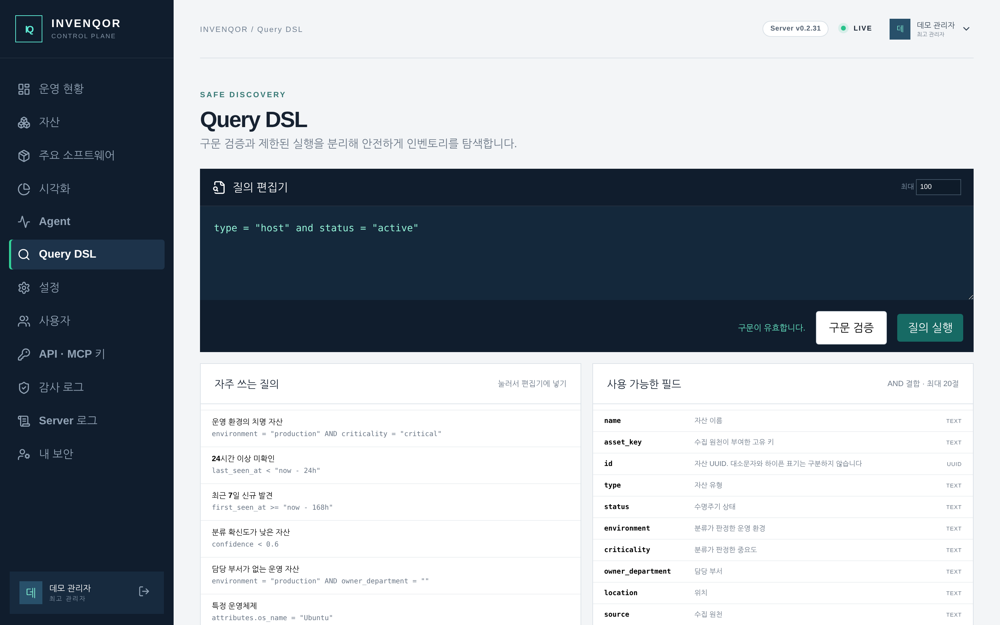
결과는 아래 패널에 표로 나옵니다. 제목의 결과 N건이 조건에 맞는 자산 전체
수이고, 오른쪽 1–100 표시 · limit 100이 그중 지금 표에 있는 범위와 한 번에
읽을 최대 건수입니다. 조건에 맞는 자산이 limit보다 많으면 어디까지 표시
중인지 안내가 붙고 표 아래에 이전·다음 버튼이 나타나므로, 조건을
좁히지 않아도 같은 질의로 끝까지 넘겨 볼 수 있습니다. 질의 실행을 다시
누르면 첫 페이지부터 시작합니다.
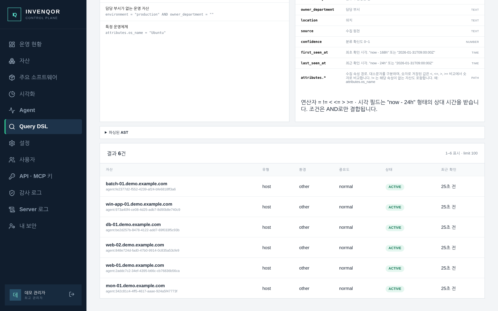
우측 상단 프로필 메뉴의 내 보안에서 다중요소 인증(TOTP)을 등록하고 복구 코드를 보관합니다. 로컬 계정은 같은 화면에서 비밀번호를 바꿀 수 있습니다. Keycloak 계정의 비밀번호와 MFA는 조직 Keycloak에서 관리하므로 이 화면에 나타나지 않습니다.
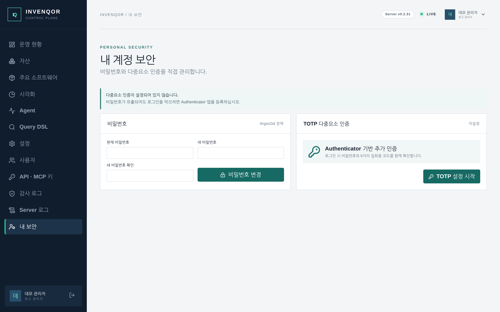
개인화는 화면 테마, 정보 밀도, 로그인 시작 화면, 운영 통계 새로고침 주기와 화면 움직임 최소화를 현재 브라우저에 사용자 ID별로 저장합니다. 다른 사용자나 Server 운영 설정에는 영향을 주지 않으므로 보안 설정 용도로 쓰지 마십시오.
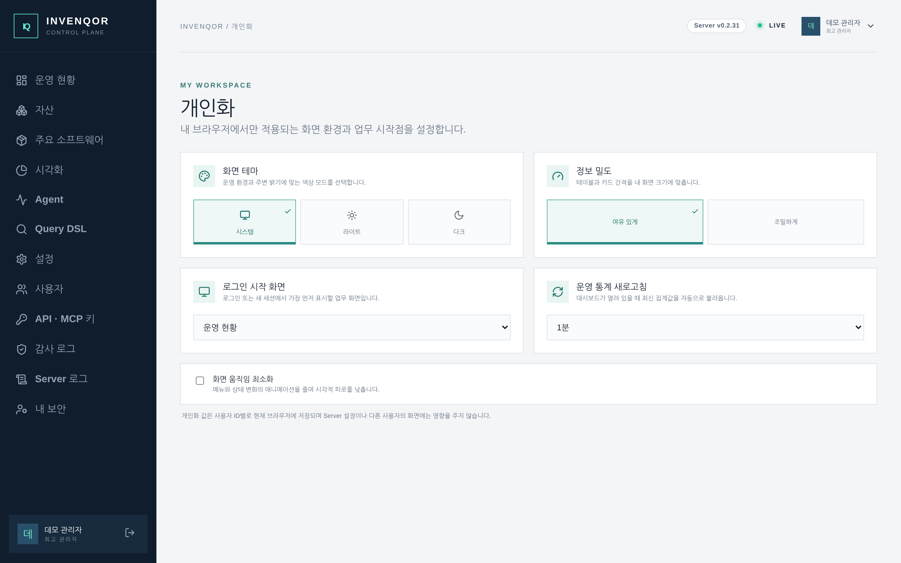
| 하려는 일 | 순서 |
|---|---|
| 새로 설치한 장비가 올라왔는지 확인 | Agent → 등록 진단에서 등록 성공이 늘었는지 보고, 자산에서 호스트 이름으로 검색합니다. |
| 특정 제품이 깔린 장비 전부 찾기 | 주요 소프트웨어에서 제품 이름을 검색하고 호스트 열을 봅니다. 원시 프로세스까지 필요하면 자산 → 프로세스 관찰 포함을 켭니다. |
| 하루 넘게 보고가 없는 장비 찾기 | Query DSL에 last_seen_at < "now - 24h"를 넣고 실행합니다. |
| 자산 목록을 표로 내려받기 | 자산에서 조건을 건 뒤 CSV 내려받기를 누릅니다. 화면에 적용된 필터가 그대로 적용됩니다. |
| 누가 무엇을 바꿨는지 확인 | 감사 로그에서 행위·자원·기간으로 검색하고, 필요하면 같은 request ID의 Server 로그로 이동합니다. |
| 연동 스크립트용 키 만들기 | API · MCP 키에서 필요한 scope만 골라 발급합니다. 원문은 발급 순간에만 보이므로 그 자리에서 보관하십시오. |
| 화면에 나오는 말 | 뜻 |
|---|---|
| 자산(Asset) | 관리 대상이 되는 구성 항목 하나. 호스트, 서비스, 주요 소프트웨어 인스턴스 등이 모두 자산입니다. |
| 자산 키(Asset key) | 수집 원천이 부여한 고유 문자열. 같은 장비를 다시 수집해도 같은 자산으로 합쳐지게 하는 기준입니다. |
| 수집 원천(Source) | 이 자산의 근거가 된 수집기와 그 원본 payload. 하나의 자산에 여러 원천이 붙을 수 있습니다. |
| 관계(Relation) | 자산 사이의 연결. runs_on은 “이 위에서 돈다”, depends_on은 “이것에 의존한다”를 뜻합니다. |
| 최신성 | 최근 확인 시각이 최근 24시간 이내인지 여부. 수집이 멈춘 자산을 찾는 기준입니다. |
| 프로세스 관찰 | 정규화되지 않은 원시 PID 관찰. 기본 목록에서는 숨기고 주요 소프트웨어의 식별 근거로만 씁니다. |
| 확신도(Confidence) | 제품 식별 근거의 강도. 보안 위험도가 아닙니다. 80% 이상이 높음입니다. |
| scope | API·MCP 키가 할 수 있는 일의 범위. 키마다 필요한 것만 골라 부여합니다. |
문서 오류 및 제품 문의: GitHub 저장소 · 보안 취약점 보고 절차: SECURITY.md